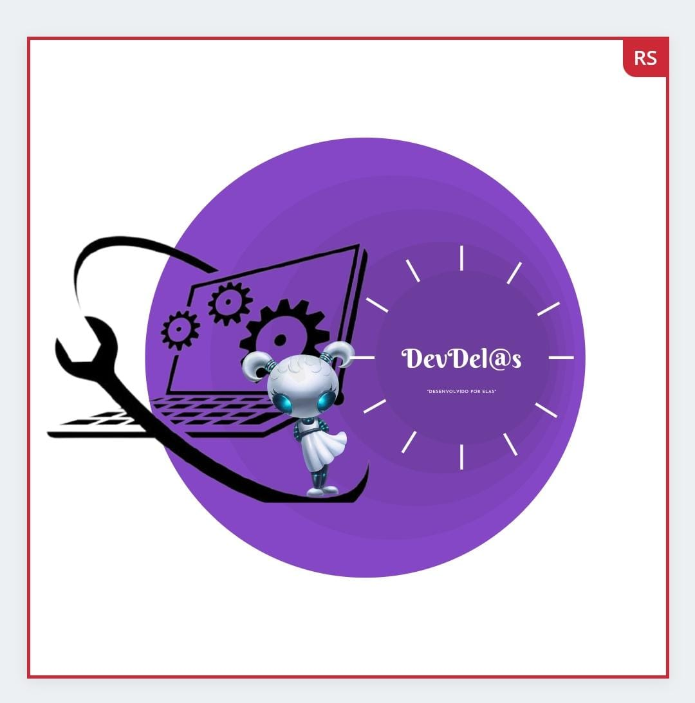
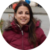

Quem somos nós?
Nós somos o grupo Dev.Delas, formado por quatro mulheres maravilhosas: Flaviane, Gabriele, Grazielle e Monique.
Nosso grupo foi formado para o desenvolvimento do projeto final da Formação pra.elas, uma parceria do Banco BV com a Gama Academy, que busca acelerar a inclusão feminina na área de tecnologia.

Conheça as participantes
Flaviane Souza Santos
Sergipana perseverante, graduanda em pedagogia pela Universidade Federal de Sergipe em transição de curso para Gestão da Tecnologia da Informação no Instituto Federal de Sergipe, buscando o desenvolvimento de aprendizagem e da carreira na área.
Gabriele Cristina Cerdas
Graduanda em Biblioteconomia e Ciência da Informação, está se aventurando em tecnologia para unir conhecimentos e encontrar novos métodos que otimizem o tratamento, recuperação e disseminação de informação de qualidade.
Grazielle Menezes
É mãe de dois e nova no mundo Tech, está se reconectando a cada dia em busca de aprender mais.

Monique Rene Navarro Lins de Azevedo
Fisioterapeuta no Hospital Universitário em Florianópolis/SC, especialista em fisioterapia respiratória e ortopedia, mestra em saúde coletiva, advogada e entusiasta por inovação e tecnologia.